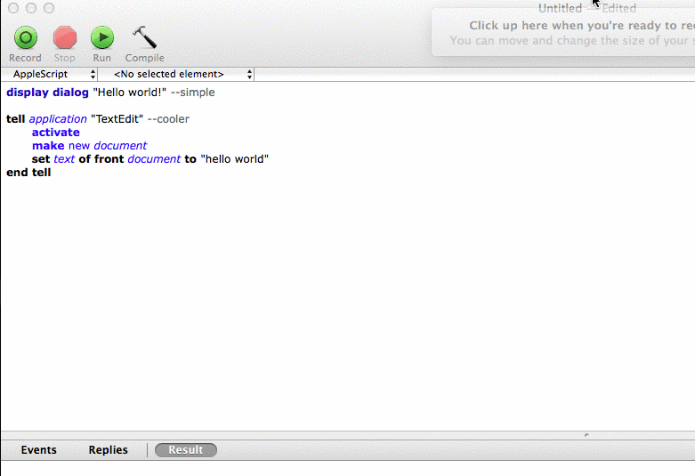
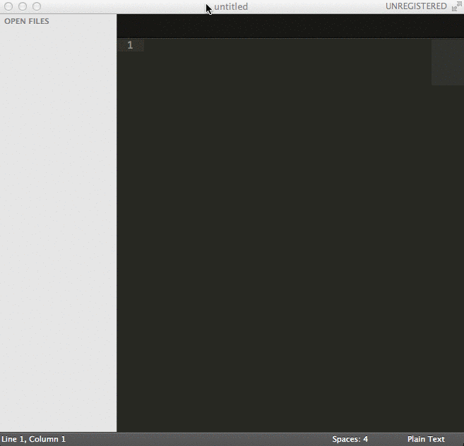
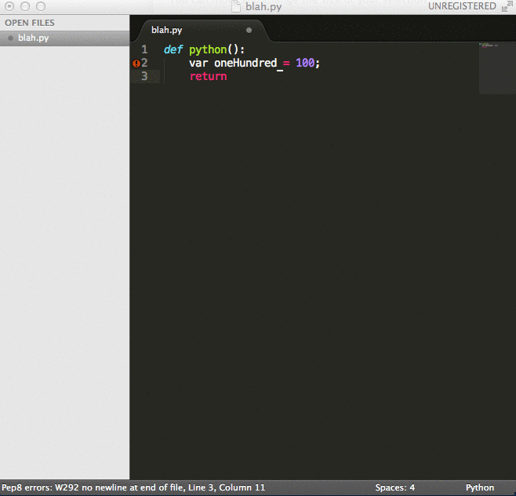
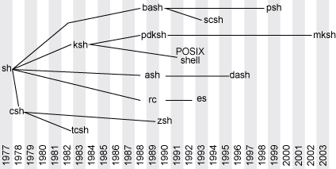

Dev Tools from A-Z
or, someone bombards you with fresh, new ideas for computer fun, but promises to give you links for both the slides and how to procure the wizardry that will follow
by Meggie Mahnken
- confession: I used to hate tools.
- Then I became a developer.
- And I started to hate my browser.
This Talk
- There will be lots of pictures and screenshots.
- Sometimes I will simply discuss a term.
- Goal: breadth, not depth
- My personal goal: try all the tools!
- a scripting language for "inter-application communication" on macs
- good for modifying files en masse
- built-in editor on macs
- inside the built-in editor there are things called "application dictionaries"
- these aren't that useful, but the AppleScript docs on the company's websites are
- lots of fun scripts and "recipes" to sift through that people have already written
Hello, world!
- A text editor that's oriented towards design
- Easily preview HTML/CSS
- closes tags automatically
- closes tags automatically
- seriously, never forget a closing tag in html again
- It's also a full text editor, so many more secrets lie within.
- clicking is hard
- some of your favorite web applications have command line versions
- Google Calender, Pivotal Tracker, Github issues, even Facebook
- some of them have multiple command line versions, written lovingly by many people who hate clicking and enjoy making tools for others to use
- you can write command line tools with Dart and clint
But how?
- install (often via pip or gem, downloading source from github, etc.)
- authenticate (read the manual, which is usually the README on github)
- "Use your $EDITOR, not your browser."
More gcalcli features
- alerts with cron jobs
- supports multiple google accounts
- views for day, 2-3 days, week, month
- a desktop app for documentation
- if you're sick of googling everything, or need docs without wifi
- free
- (or buy a license)
- Stack Overflow, language docs, bootstrap, web frameworks
- Download your personal plethora of docsets.
- searchable notes based on both title and content
- syncs happily with many phones phone
- web clipper, url generator to share notes
- taggable notes
- lets you continually dump the output of any terminal command to your desktop
- example: date, disc usage, current machine processes, simple python scrips
- always have the output of
git branchappear on top of everything else
- what are these?
- (n.) can mean keyboard shortcuts, but more often refers to Windows-specific single-letter shortcuts that apply in a variety of contexts and may or may not require the "alt" key to be pressed.
- great for spreadsheet nerds and people who are into the Quantified Self but don't want to wear a fitbit
- let social media, your location, your phone/OS activity, and more interact
- I use it to create a work log.
- gotcha: sometimes channels break. Check on them every so often.
- a syntax-highlighted python interpreter
- tab completion for your (my) bizarre variable names
- tab completion for libraries and METHODS
- never type and attempt to read the out of
dir(python_object)again!
Recipe 1
AppleScript + Evernote
- What are these?
- No, I'm asking you.
- (n.) keyboard shortcuts that tend to be highly personalized; can differ greatly from user to user
- can refer to keyboard shortcuts specific to text editors
- can also refer to a sequence of keys
- IDE = Integrated Development Environment
- someone once told me: IDE's are what separates a programmer from a professional software engineer
- Wait, really?
What makes an IDE worth using
- I'm asking you.
- Upgrades bpython's syntactic autocompletion to an actual modal dialog
- for Python, this would be a dialog box that pops up telling you about an objects attributes, or a class's builtin methods, like list operations.
- These can be type filtered, like in bpython.
- Code navigation
- What's this?
- Moving around your code confidently and swiftly can make a huge difference in the development process.
- bro pages are shorter, better man pages
- bro supposedly stands for browse
- make sure you actually read the newsletter that you choose

- using the Pomodoro Technique.
- pomo is a CLI tool that's for most operating systems
- Tomatoes desktop app
- What is a linter?
- I'm asking you.
- Sublime text has many!
- CMD + SHIFT + P
To install: CMD + SHIFT + P, search for Pep8
The linter
- desktop apps for navigating your mac more efficiently
- workflows, different outputs, like IFTTT for your computer
- here's Alfred!
- showterm lets you record your terminal sessions
- really easily
- usage:
showtermcontrol + D- auto-uploads a video of your session and gives you share-able link
Recipe 2
Geektool + Python
import requests
from BeautifulSoup import BeautifulSoup
import datetime
extra = ''
weekday = datetime.datetime.now().strftime("%A")
if weekday == 'Monday':
weekday = 'Tuesday'
extra = 'For tomorrow,'
blob = requests.get('http://www.cheeseboardcollective.coop/pizza')
soup = BeautifulSoup(blob.text)
section = soup.findAll(['h4', 'p'])
def pizza():
for item in section:
if item.text[0:2] == weekday[0:2]:
phrase = "%s's Cheeseboard\n%s" % (item.text, section[section.index(item)+1].text)
print phrase
return
pizza()
- certainly on the command line
- definitely in your text editor
- If you don't use tab completion, kittens might die.
- also to easily search with Google Chrome
- What is this?
- a file called
.vimrcthat contains additions, modifications, and extensions to the text editor vim - example
.vimrc
- all of my video screenshots were made into gifs by RecordIt
- live demo (!)
History of shell
Reveal.js
HTML Presentations Made Easy
Created by Hakim El Hattab / @hakimel
Heads Up
reveal.js is a framework for easily creating beautiful presentations using HTML. You'll need a browser with support for CSS 3D transforms to see it in its full glory.
Vertical Slides
Slides can be nested inside of other slides, try pressing down.
Basement Level 1
Press down or up to navigate.
Basement Level 2
Cornify

Basement Level 3
That's it, time to go back up.
Slides
Not a coder? No problem. There's a fully-featured visual editor for authoring these, try it out at http://slid.es.
Point of View
Press ESC to enter the slide overview.
Hold down alt and click on any element to zoom in on it using zoom.js. Alt + click anywhere to zoom back out.
Works in Mobile Safari
Try it out! You can swipe through the slides and pinch your way to the overview.
Marvelous Unordered List
- No order here
- Or here
- Or here
- Or here
Fantastic Ordered List
- One is smaller than...
- Two is smaller than...
- Three!
Transition Styles
You can select from different transitions, like:
Cube -
Page -
Concave -
Zoom -
Linear -
Fade -
None -
Default
Themes
Reveal.js comes with a few themes built in:
Default -
Sky -
Beige -
Simple -
Serif -
Night
Moon -
Solarized
* Theme demos are loaded after the presentation which leads to flicker. In production you should load your theme in the <head> using a <link>.
Global State
Set data-state="something" on a slide and "something"
will be added as a class to the document element when the slide is open. This lets you
apply broader style changes, like switching the background.
Custom Events
Additionally custom events can be triggered on a per slide basis by binding to the data-state name.
Reveal.addEventListener( 'customevent', function() {
console.log( '"customevent" has fired' );
} );
Slide Backgrounds
Set data-background="#007777" on a slide to change the full page background to the given color. All CSS color formats are supported.
Image Backgrounds
<section data-background="image.png">Repeated Image Backgrounds
<section data-background="image.png" data-background-repeat="repeat" data-background-size="100px">Background Transitions
Pass reveal.js the backgroundTransition: 'slide' config argument to make backgrounds slide rather than fade.
Background Transition Override
You can override background transitions per slide by using data-background-transition="slide".
Clever Quotes
These guys come in two forms, inline:
“The nice thing about standards is that there are so many to choose from”
and block:
“For years there has been a theory that millions of monkeys typing at random on millions of typewriters would reproduce the entire works of Shakespeare. The Internet has proven this theory to be untrue.”
Pretty Code
function linkify( selector ) {
if( supports3DTransforms ) {
var nodes = document.querySelectorAll( selector );
for( var i = 0, len = nodes.length; i < len; i++ ) {
var node = nodes[i];
if( !node.className ) {
node.className += ' roll';
}
}
}
}
Courtesy of highlight.js.
Intergalactic Interconnections
You can link between slides internally, like this.
Fragmented Views
Hit the next arrow...
... to step through ...
any type- of view
- fragments
Fragment Styles
There's a few styles of fragments, like:
grow
shrink
roll-in
fade-out
highlight-red
highlight-green
highlight-blue
current-visible
highlight-current-blue
Spectacular image!

Export to PDF
Presentations can be exported to PDF, below is an example that's been uploaded to SlideShare.
Take a Moment
Press b or period on your keyboard to enter the 'paused' mode. This mode is helpful when you want to take distracting slides off the screen during a presentation.